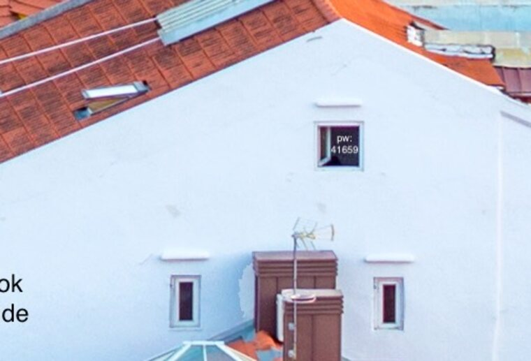
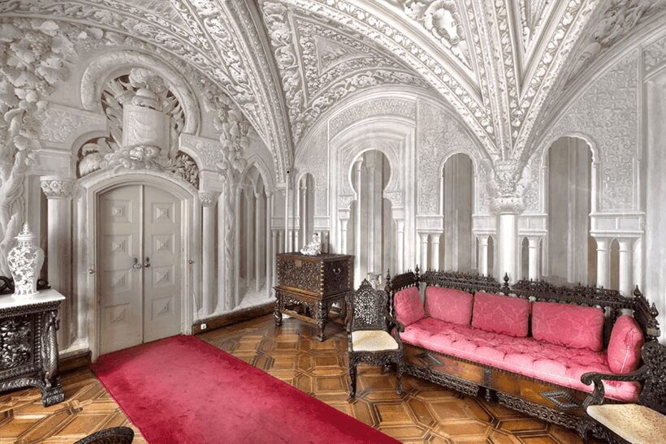

Navnet "bitwise_secrecy" lokker mod LSB-stego — men nøglen står synligt i motivet.
En to-delt forensics-opgave på ét foto: bitwise_secrecy.jpeg (6720×4480, São Jorge-slottet
i Lissabon), fra DCIS-OSINT-bundtet. Pt.1: hvor mødes forbryderen med sin ven?
Pt.2: hvad er næste plan?
Navnet bitwise_secrecy og "hiding information in pictures" skriger LSB/bit-plane-steganografi.
Men udtømmende afprøvning (zsteg, jsteg, outguess, EXIF, bit-planer,
trailing data) giver intet. Nøglen ligger synligt i selve motivet: zoom ind
på et vindue i den hvide bygning nederst mod midten — der står pw: 41659.

Det er steghide-passwordet (steghide understøtter JPEG):
steghide extract -sf bitwise_secrecy.jpeg -p 41659
# -> secret.zip -> secret/plan.txt + secret/meeting-point.pngplan.txt (signeret "– J") beskriver næste skridt: væk fra centraliseret infrastruktur,
fuldt decentraliseret onion-baseret C2, ephemeral bridges, safehouse i Lissabon — "a new start". Flaget står
til sidst i beskeden.
meeting-point.png viser et palads-interiør. Pas på: GPS-EXIF'en
(22°26'N 74°13'W = midt i Bahamas) er en bevidst afledning — PNG-kommentaren siger ligefrem
"Haha, I learned how to cover my tracks." GPS-metadata er trivielt at forfalske, så stol ikke på det.
Identificér rummet visuelt (reverse image search) → det er entydigt Pena-paladset
(Palácio da Pena) i Sintra. Flag-format var {Kongens_Nytorv}-stil → stednavnet.

meeting-point.png — palads-interiøret. Reverse image search giver entydigt Pena-paladset (Sintra); GPS-EXIF'en (Bahamas) er en bevidst afledning.steghide (JPEG/BMP/WAV) kræver et password — det ligger tit "hidden in plain sight".